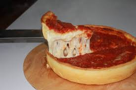

Pizza by Corbi

Description
This recipe isn't real, most are about how to make pizza dough. I will instead guide you in a fictious pizza recipe about poop tomato sauce and pizz cheese. The ingridents aren't real but this show of work is, just a stepping stone of learning skills to build my portfolio.
Ingridients
- Flour
- Water
- Piss Cheese
- Poop Tomato Sauce
- Whipped Cream
Steps
- Take the water and throw it into the flour.
- Mix the flour and water until you get dough.
- Then spread the dough over a pizza steel
- Spread your poop tomato sauce over the dough
- Sprinkle your pee cheese over the poop tomato sauce
- Bake the shitty pizza at 450 Fahrenheit for 30 mins
- Take out of over and let sit for 10 mins
HOME